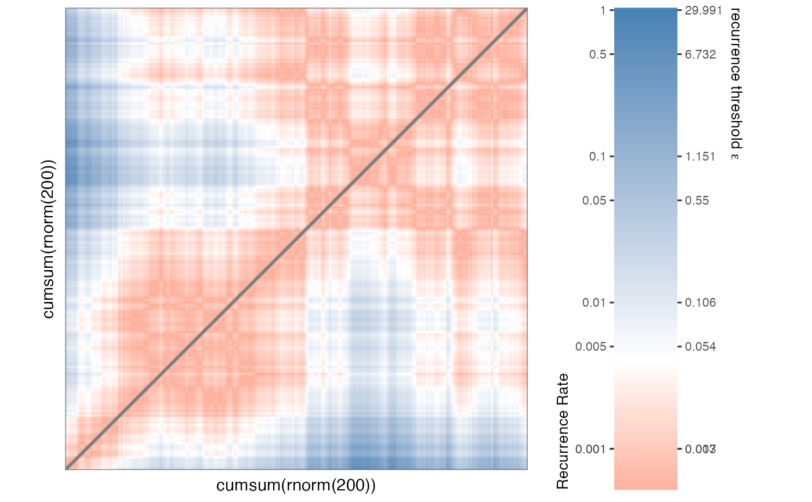
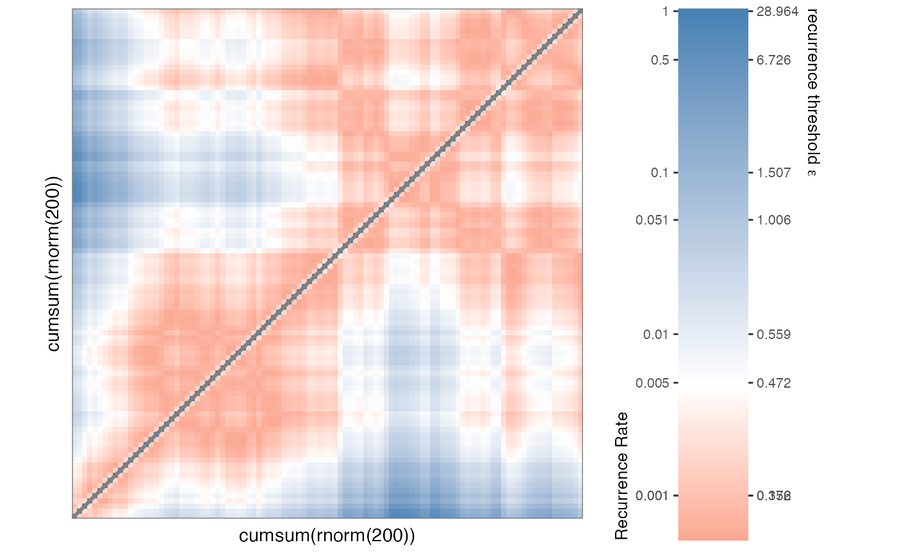
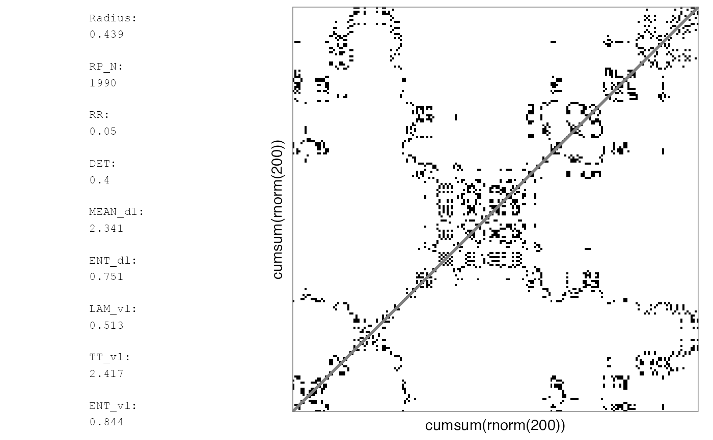
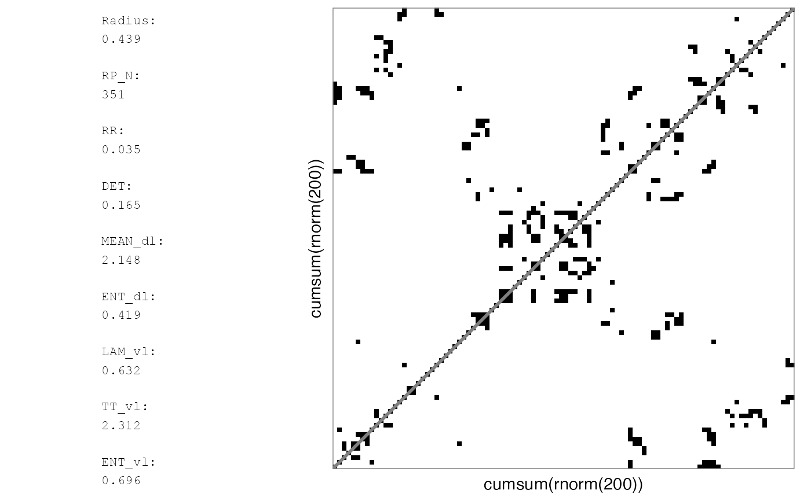
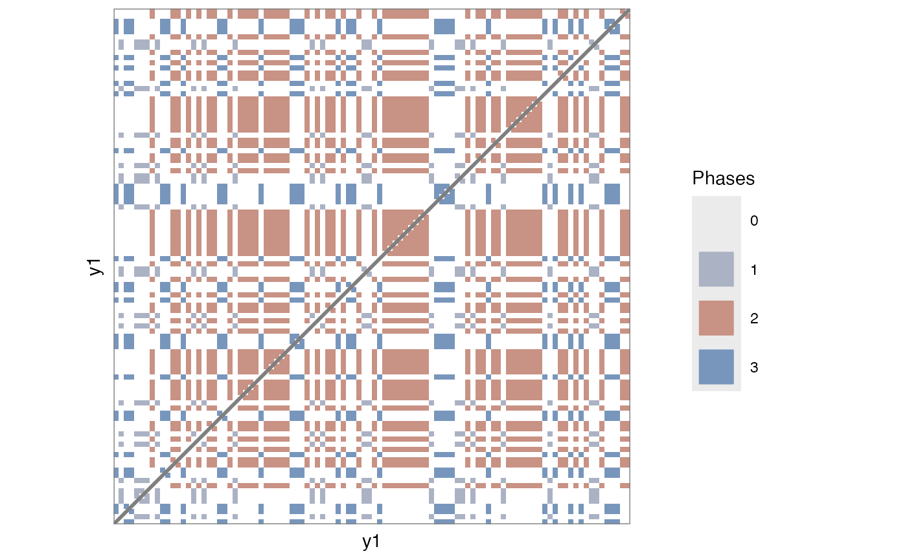
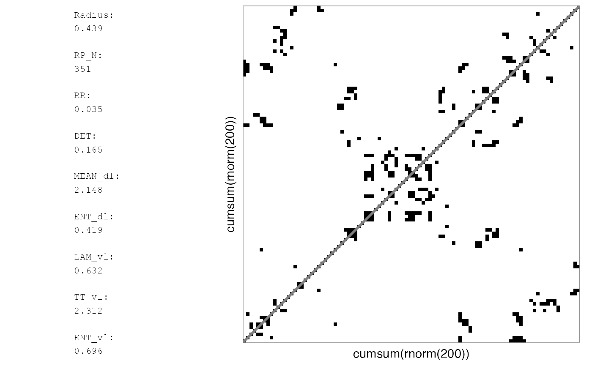
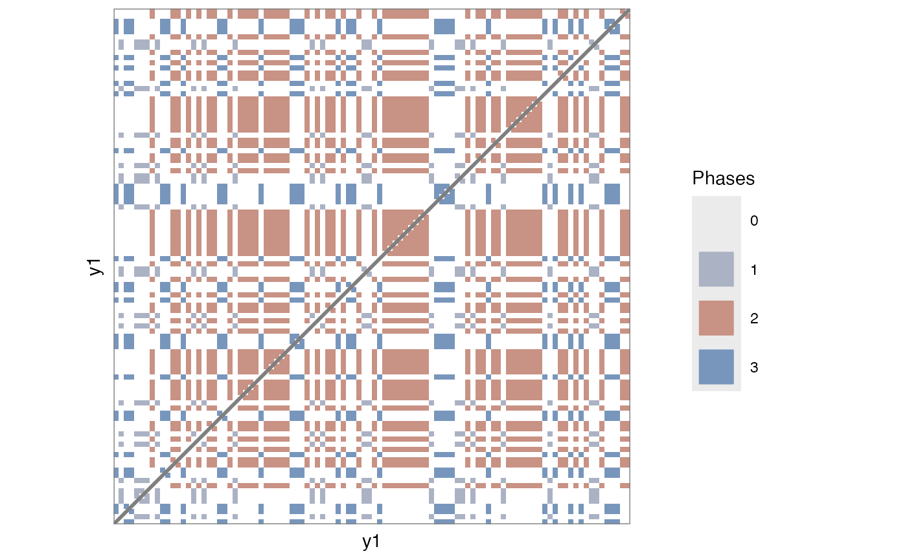

Course grain a matrix for plotting
Arguments
- RM
A (recurrence) matrix
- target_height
How many rows? (default =
NROW(RM)/2)- target_width
How many columns? (default =
NCOL(RM)/2)- summary_func
How to summarise the values in subset
XofRM. If set toNA, the function will try to pick a summary function based on the cell values: IfRMis a distance matrix,mean(X, na.rm = TRUE)will be used; If it is a binary matrixifelse(mean(X, na.rm = TRUE)>recurrence_threshold,1,0), a categorical matrix (categorical = TRUE, or, matrix attributechromatic = TRUE) will pick the most frequent category in the subsetattributes(ftable(X))$col.vars$x[[which.max(ftable(X))]]. (default =NA)- recurrence_threshold
For a binary matrix the mean of the cells to be summarised will vary between
0and1, which essentially represents the recurrence rate for that subset of the matrix. IfNAthe threshold will be set to a value that in most cases should return a plot with a similarRRas the original plot. (default =NA)- categorical
If set to
TRUE, will forcesummary_functo select the most frequent value. IfNAthe matrix attributechromaticwill be used. Ifchromaticis not present, all values in the matrix have to be whole numbers as determined byplyr::is.discrete(). (default =NA)- output_type
The output format for
plyr::vapply(). (default =0.0)- n_core
Number of cores for parallel processing. Set to
NAto automatically choose cores. (default =1)- silent
Silt-ish mode (default =
FALSE)
Note
This code was inspired by code published in a blog post by Guillaume Devailly on 29-04-2020 (https://gdevailly.netlify.app/post/plotting-big-matrices-in-r/)
Examples
# Continuous
RMc1 <- rp(cumsum(rnorm(200)))
rp_plot(RMc1)

RMc2 <- mat_coursegrain(RMc1)
#> Continuous matrix... using summary function 'mean(x, na.rm = TRUE)' for coursegraining.
rp_plot(RMc2)

# Binary
RMb1 <- rp(cumsum(rnorm(200)), emRad = NA)
rp_plot(RMb1, plotMeasures = TRUE)
#> Auto-RQA, not including diagonal, theiler set to 1...

# Reported RQA measures in rp_plot will be based on the full matrix
rp_plot(RMb1, maxSize = 100^2, plotMeasures = TRUE)
#> Auto-RQA, not including diagonal, theiler set to 1...
#> NOTE: To speed up the plotting process, the RP will represent a coursegrained matrix. Set argument 'courseGrain = FALSE' to see the full matrix.
#> Auto-RQA, not including diagonal, theiler set to 1...
#> Binary matrix... using summary function 'ifelse(mean(x, na.rm = TRUE)>recurrence_threshold,1,0)' for coursegraining.
 # Plotting the coursegrained matrix itself will yield different values
RMb2 <- mat_coursegrain(RMb1)
#> Auto-RQA, not including diagonal, theiler set to 1...
#> Binary matrix... using summary function 'ifelse(mean(x, na.rm = TRUE)>recurrence_threshold,1,0)' for coursegraining.
rp_plot(RMb2, plotMeasures = TRUE)
#> Auto-RQA, not including diagonal, theiler set to 1...

# Categorical
RMl1 <- rp(y1 = round(runif(100, min = 1, max = 3)), chromatic = TRUE)
rp_plot(RMl1)
#> Warning: Multiple components found; returning the first one. To return all, use `return_all = TRUE`.

RMl2 <- mat_coursegrain(RMl1, categorical = TRUE)
#> Categorical matrix... using summary function 'attributes(ftable(x))$col.vars[[which.max(ftable(x))]]' for coursegraining.
rp_plot(RMl2)
#> Warning: Multiple components found; returning the first one. To return all, use `return_all = TRUE`.
# Plotting the coursegrained matrix itself will yield different values
RMb2 <- mat_coursegrain(RMb1)
#> Auto-RQA, not including diagonal, theiler set to 1...
#> Binary matrix... using summary function 'ifelse(mean(x, na.rm = TRUE)>recurrence_threshold,1,0)' for coursegraining.
rp_plot(RMb2, plotMeasures = TRUE)
#> Auto-RQA, not including diagonal, theiler set to 1...

# Categorical
RMl1 <- rp(y1 = round(runif(100, min = 1, max = 3)), chromatic = TRUE)
rp_plot(RMl1)
#> Warning: Multiple components found; returning the first one. To return all, use `return_all = TRUE`.

RMl2 <- mat_coursegrain(RMl1, categorical = TRUE)
#> Categorical matrix... using summary function 'attributes(ftable(x))$col.vars[[which.max(ftable(x))]]' for coursegraining.
rp_plot(RMl2)
#> Warning: Multiple components found; returning the first one. To return all, use `return_all = TRUE`.